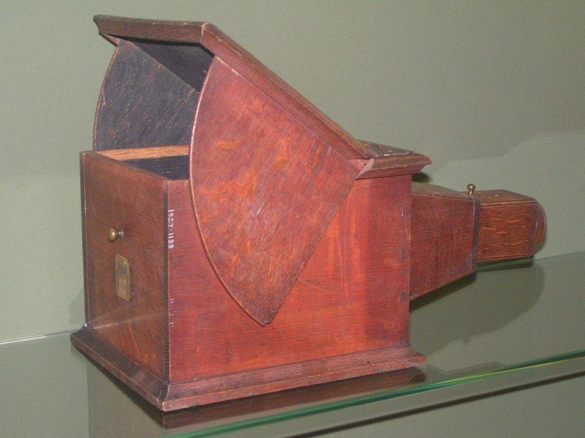

История фотографии
История возникновения фотографии начинается с конца 18 века. Изобретателем фотографии является Жозеф Нисефор Ньепс. Он принял решение, добиться автоматического создания изображений на бумаге с помощью *камеры-обскуры. Для получения черно-белых изображений использовалась бумага, пропитанная сирийским асфальтом. Проблема такого фотографирования заключалась в том, что Людей фотографировать было невозможно. Со смертью Ньепса история развития фотографии не прекратилась. Но история фотографии на этом не закончилась. Дело Ньепса продолжил Луи Жак Дагер. Он использовал для создания фотографий медные пластинки с серебристым слоем, обмазанные йодом. В 1835 Дагер обнаружил, что картинка быстрее проявляется под воздействием паров ртути. В дальнейшем процесс создания фотографий постепенно совершенствовался. В 1850-ых годах была изобретена стереоскопическая дагеротипия. При помощи отдельных луп или бинокля каждый глаз человека смотрел на одну фотографию. В результате изображение казалось объемным. Но в процессе создания фотографии остался большой недостаток. Это невозможность копирования фотографий. Позже, благодаря Уильяму Генри Фоксу Тальботу фотографию стало возможно переносить с одного носителя на другой. При этом цвета менялись, в результате получалось черно-белое изображение. Первая фотокамера в привычном нам виде появилась в 20 веке. Снимок делался при помощи фотоаппарата. Внутрь устройства вставлялась фотопленка. После проявки можно было перенести снимки на фотобумагу. В 1980 году поручик Измайлов снабдил фотоаппарат системой магазинного ружья. Это позволило быстро менять фотопластинки. Всего в магазин помещались 70 пластинок. Эволюция создании фотографии дошла до того, что в нынешнее время в каждом смартфоне есть встроенная фотокамера.
*Камера-обскура – это приспособление, с помощью которого художники 18 века рисовали экспозиции.
